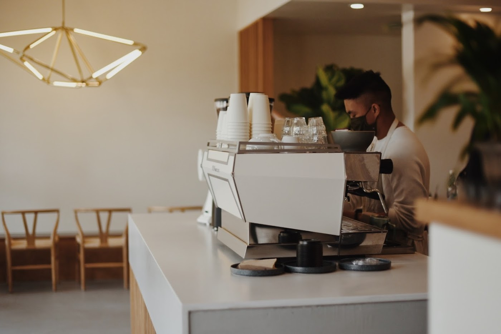

Coffee & Natural Wine · Midtown Sacramento
A multi-roaster coffee bar by morning, a low-intervention wine bar by afternoon — with seasonal food that doesn't apologize for being a little weird and wonderful.

Japandi minimalismScorpio is a coffee bar and natural-wine room in the heart of Midtown — built for the solo morning, the slow afternoon, and the kind of food you photograph before you taste.
We pour from a rotating cast of specialty roasters — DAK, Sey, and friends — so the cup changes with the season and the harvest. Light-to-medium, fruity and balanced; milk textured the way it should be.
The kitchen leans Japandi: spare, intentional, vegetable-forward. Mushroom toast crowned with an onsen egg. Strawberry-miso toast with fresh ricotta and honey. Müsli with peach and berries. Clear dietary labels — veg, gluten-free, and oat-milk friendly throughout.
Come evening, the lights drop and the natural wine comes out: low-intervention, small-grower, poured by people who actually want to tell you about it.
Such a calm and zen coffee place. The oat-milk cappuccinos, the coffee cake, the ricotta-honey-and-pear toast — all so delicate, the perfect level of sweetness.— A. Sharma
The space is gorgeous, modern, designed so well. Light-to-medium roast, fruity and balanced — it reminded me of the coffee I loved in Barcelona. One of my new favorite spots in Sacramento.— Maryam · food critic
The mushroom toast is a moody little masterpiece, crowned with that onsen egg. The Matcha Cream Soda? Iconic — I gasped, I sipped, I ordered another. Chic Japandi minimalism, and the staff is sweet.— Jerry J.
I received the most joyful, patient welcome here. When I switched from eat-in to to-go they pivoted effortlessly. The mushroom toast is distinct — marvelously savory. Definitely a repeatable one.— Lynn G.
1905 16th Street
Midtown · Sacramento, CA 95811